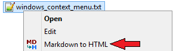
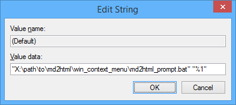
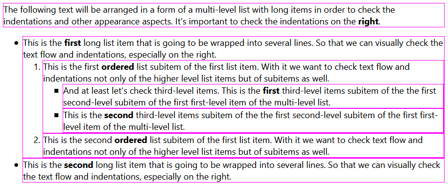
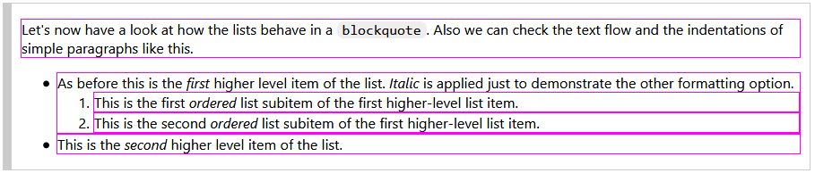

This is an automatically generated document.
This utility provides an easy way to convert single Markdown documents into single HTML pages.
It uses Python-Markdown module, see:
This document describes the converter's features, gives usage notes and itself demonstrates a possible obtainable result.
Also see the Java version implemented in this project.
This utility requires Python 3. The following Python packages must
be installed (in Windows, pip3 command must be called just pip):
$ pip3 install Markdown
. . .
$ pip3 install markdown-del-ins
. . .
$ pip3 install markdown-emdash
. . .
Note. If this doesn't work, try
python -m pip install ...(or probablypython3 ...on Linux).
Place the directory containing this file wherever you like. Define MD2HTML_PY_HOME environment
variable (system-wide of for a user). The latter is not necessary though will make the usage
much more convenient (this variable will probably also be mentioned below).
File md2html.py is minimal possible element required. The templates directory
contains the HTML template and the CSS used by default. The win_context_menu directory
contains Windows Explorer context menu integration artifacts (see below).
The utility provides its usage information in a standard manner:
>python md2html.py -h
usage: md2html.py [-h] [-i INPUT] [-o OUTPUT] [-t TITLE] [--templates TEMPLATES] [-l LINK_CSS] [-f] [-v] [-r] ...
Converts Markdown document into HTML document.
positional arguments:
positionals for -i, -o, and -t, incompatible with corresponding named arguments
optional arguments:
-h, --help show this help message and exit
-i INPUT, --input INPUT
input Markdown file name (mandatory)
-o OUTPUT, --output OUTPUT
output HTML file name, defaults to input file name with '.html' extension
-t TITLE, --title TITLE
the HTML page title, if omitted there will be an empty title
--templates TEMPLATES
custom template directory
-l LINK_CSS, --link-css LINK_CSS
links CSS file, if omitted includes the default CSS into HTML
-f, --force rewrites HTML output file even if it was modified later than the input file
-v, --verbose outputs human readable information messages
-r, --report if HTML file is generated, outputs the path of this file, incompatible with -v
Simplified argument set may be used: <input file name> <output file name> <page title>
File md2html.bat is used for generating this documentation. It demonstrates
different usage variations. File md2html_list.txt contains arguments for
a single HTML-file generation per line. The script reads this lines successively and sends the
arguments the Python module. Also the script adds its own arguments to the Python module call.
For example, if md2html.bat -f is called then the module will forcefully regenerate the
HTML files.
This script may be executed by a double click from, e.g., the project's directory. It opens a command window, does its job and:
If the value of MD2HTML_PY_HOME variable is added to the PATH then this script will work
from the current directory and process the file md2html_list.txt from that directory.
This utility may be integrated into Windows Explorer context menu.

For this, the batch file
win_context_menu/md2html_prompt.bat may be used.
It opens a command line prompt window and allows to redefine some options. Just pressing
Enter will fulfill generation with default options.
To add this context menu item, press Win+R, type regedit and add the following keys
and values (@ stands for (Default)):
[HKEY_CURRENT_USER\Software\Classes\*\shell\md2html]
@="Markdown to HTML"
"icon"="X:\\path\\to\\md2html\\win_context_menu\\icon.ico"
[HKEY_CURRENT_USER\Software\Classes\*\shell\md2html\command]
@="\"X:\\path\\to\\md2html\\win_context_menu\\md2html_prompt.bat\" \"%1\""
Note. The quotes must be set like this:

When working on a project we need to periodically regenerate our HTML documentation. With Git
we may want to do it automatically on commit. Special argument --report was introduced for
this purpose. It outputs the generated output file path if this file was generated or
regenerated so that a Git hook can add it into the stage.
Here's a Git hook pre-commit example (works in Windows too):
#!/bin/bash
grep -v '^\s*$' md2html_list.txt | sed -e 's/\r//' | while read args; do
result=`echo ${args} | xargs python3 ${MD2HTML_PY_HOME}/md2html.py -r`
exitcode=${PIPESTATUS[0]}
result=`echo $result | sed -e 's/\r//'`
if [ $exitcode -eq 0 ]; then
if [[ -n $result ]]; then
echo md2html.py: Adding: $result
git add -- ${result}
else
echo md2html.py: Skipping one file
fi
else
echo Error: $result
exit 1
fi
done
The file md2html_list.txt was already mentioned above. Defining environment
variable MD2HTML_PY_HOME (globally or for a user) may be a better decision than specifying
the exact full path.
This utility works in Linux. The script for manual HTML generation may be adapted from the
above Git hook example. It may be simplified, -r argument must be changed to -v and
git add command must be removed.
By default the utility works based on a predefined empirically developed template that must be suitable for most basic technical writing. Different template may be created and defined via the command line. An example below demonstrates this option.
For portability purpose by default CSS is included into the HTML document. Press Ctrl + U
in Firefox (and probably other browsers) to see haw it looks like in the source code. Command
line arguments allow to redefine this behavior.
Below is an example of a page that was generated using a custom template set. And also CSS was linked instead of being included. Click the arrow to navigate:
This document itself demonstrates the available Markdown features of this implementation. This section provides other examples.
See the source Markdown files like, this, to know how such result may be obtained.
An image usage is demonstrated above (the yellow arrow). In this example alt and title
attributes are filled.
The following text will be arranged in a form of a multi-level list with long items in order to check the indentations and the text flow. It's important to check the indentations on the right.
If we temporarily add the CSS rule:
p, li {
border: solid 1px fuchsia;
}
we will see:

So the text doesn't overflow the limits.
Let's now have a look at how a list behaves in a
blockquote. Also we can check the text flow and the indentations of simple paragraphs like this.
- As before this is the first higher level item of the list. Italic is applied just to demonstrate the other formatting option.
- This is the first ordered list subitem of the first higher-level list item.
- This is the second ordered list subitem of the first higher-level list item.
- This is the second higher level item of the list.
As we can see there's no overflow in this case too:

Tables may be used for representing tabular data and for text alignment sometimes. In this implementation light table style is chosen as the default.
| Item No | Name | Description | Price |
|---|---|---|---|
| 1 | Chair | Kitchen chair | 87.50 |
| 2 | Table | Kitchen table | 450.00 |
| 3 | Lamp | Standard lamp | 120.75 |
So if we want to just align text we can use a table without a header:
| 10 | 20 | 30 | 40 |
| 50 | 60 | 70 | 80 |
| 90 | 100 | 110 | 120 |
Markdown doesn't allow for different table styles, but some trick may be used to get this
functionality — specifically, adding an invisible element (an empty <div> in this case)
right before the table and then using some simple CSS magic to define the appearance:
<div class="tablePlated"></div>
Then we can get styles like this:
| Item No | Name | Description | Price |
|---|---|---|---|
| 1 | Chair | Kitchen chair | 87.50 |
| 2 | Table | Kitchen table | 450.00 |
| 3 | Lamp | Standard lamp | 120.75 |
and this (class="tableGridded"):
| Item No | Name | Description | Price |
|---|---|---|---|
| 1 | Chair | Kitchen chair | 87.50 |
| 2 | Table | Kitchen table | 450.00 |
| 3 | Lamp | Standard lamp | 120.75 |
Text fragments may be marked as:
~~ from both sides);++);__bold__ or **bold**);_italic_ or *italic*).Three dashes (---) may be replaced with an em-dash (—) — yes, it works!
Unmarked code block. Visually corresponds to inline code fragments:
This code block represents information:
- like `inline` code fragments
- but of bigger size
- and when we need to preserve line breaks
Light code block (marked as text):
This code block is used:
- when we need no background and borders
- and the text must be monospaced
- and we need to preserve line breaks
Shell code block (marked as shell):
$ echo "This block demonstrates operations in a shell"
This block demonstrates operations in a shell
Program language code block (marked as code):
System.out.println("This block demonstrates a source code in a program language.");